History
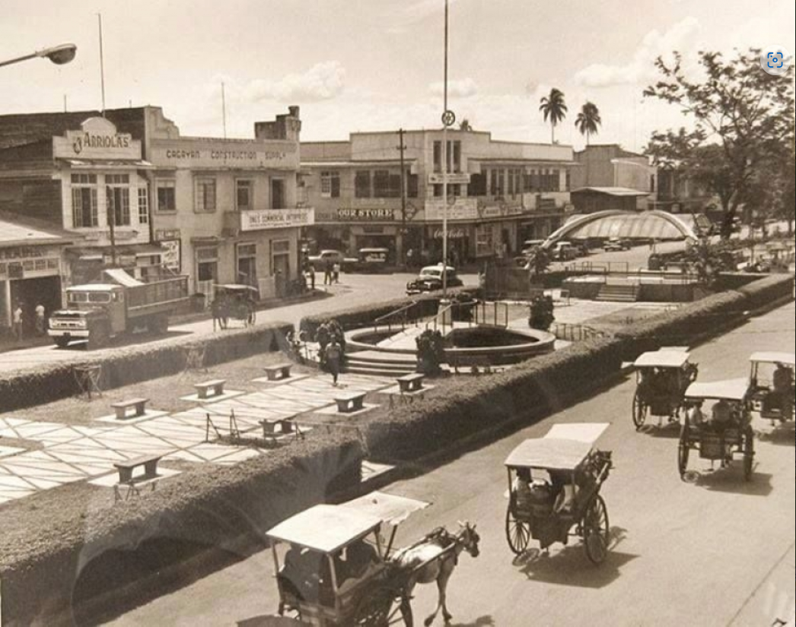Cagayan de Oro, often abbreviated as CDO, is a highly urbanized city in Northern Mindanao, Philippines. It is known as the "City of Golden Friendship" due to the friendly and hospitable nature of its people.
Cagayan de Oro City is a city in the Philippines that lies along the Cagayan River near the head of Macajalar Bay. It was established as a mission station in the 17th century and was fortified by the Spaniards. Cagayan de Oro was chartered as a city in 1950 and has become the transportation and commercial hub of northern Mindanao. The Higaonon were early settlers of Cagayan de Oro, and signs of ancient habitation were discovered in 1970 by field researchers of the National Museum. The Ministry of Local Government declared Cagayan de Oro City as a Highly Urbanized City on November 22, 1983.
Geography
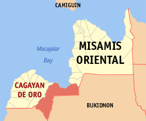Cagayan de Oro City is located on the central coastal area of Northern Mindanao. It is bordered by the Misamis Oriental Municipality of Opol in the west, the Provincial Municipality of Tagoloan to the East, the Provinces of Bukidnon and Lanao del Norte to South, and Macajalar Bay to the North facing the sea. The city center is situated at approximately 8° 29' North, 124° 39' East, in the island of Mindanao. Its overall land area is 488.86 square kilometers, accounting for 13.9% of Misamis Oriental’s total land area.
The city boasts a diverse landscape, including coastal areas, rivers, mountains, and valleys. The Cagayan River, the longest river in Mindanao, flows through the heart of the city, offering opportunities for water-based activities.
Demographics
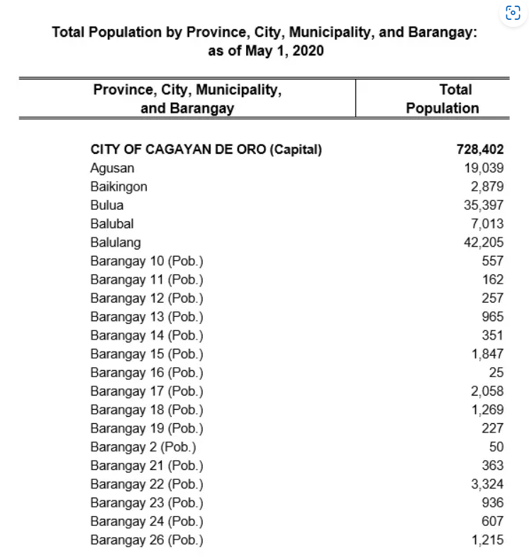As of the 2020 census, Cagayan de Oro has a population of over 730,000 people, making it the 10th most populous city in the Philippines. The population is a mix of various ethnicities and cultures, including the indigenous Lumad communities, as well as migrants from other parts of the country.
About 44% of the household population in Cagayan de Oro classified themselves as ethnically mixed people, 22.15% as Cebuano, 4.38% as Boholano, while 28.07% as other ethnic groups, including those indigenous people from neighboring towns and provinces such as Higaonon, Subanen and Manobo; Muslim ethnolinguistic groups such as Maranaos, Maguindanaons and Tausugs; and migrants from Luzon and their descendants such as Tagalogs, Kapampangans, Bicolanos and Ilocanos (as of 2000 census).
Economy
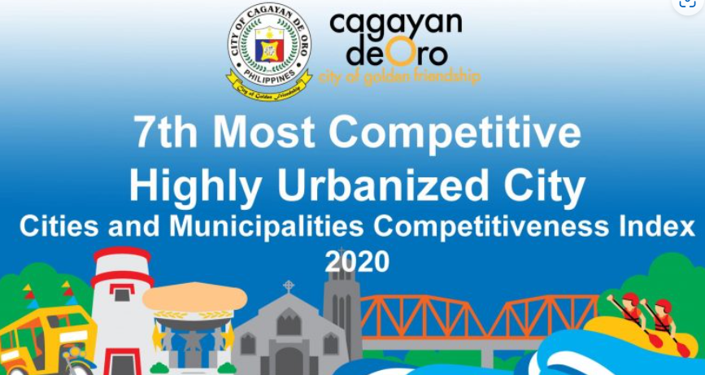Cagayan de Oro serves as the regional center for trade, commerce, education, and industry in Northern Mindanao. Its economy is diverse, with key sectors including agriculture, manufacturing, services, and tourism.
The city's strategic location and infrastructure make it an ideal hub for business and investment. It is home to numerous malls, commercial centers, and industrial zones.
Growth Rate in 2022:
Cagayan de Oro emerged as the fastest-growing economy in Northern Mindanao in 2022, achieving an impressive 9.4% growth rate. This surpassed the regional average growth rate of 7.2%1.
The city’s economy in 2022 amounted to P261.8 billion, constituting 28% of the region’s gross regional domestic product (GRDP) recorded at P935.30 billion.
Industry Contributions:
Services: Contributed the most (7.6 percentage points).
Industry: Contributed significantly (1.8 percentage points).
Agriculture, Forestry, and Fishing (AFF): Made a smaller contribution (0.05 percentage points).
Cagayan-Iligan Industrial and Trade Corridor:Cagayan de Oro’s share of the industry output, along with Misamis Oriental, contributes significantly to the realization of the Cagayan-Iligan Industrial and Trade Corridor.
In summary, Cagayan de Oro City plays a vital role in driving the economic growth of Northern Mindanao, with its dynamic industries and substantial contributions.
Tourism and Attractions
Cagayan de Oro offers a wide range of tourist attractions and activities for visitors to enjoy. Some of the popular attractions include:
- White Water Rafting along the Cagayan River 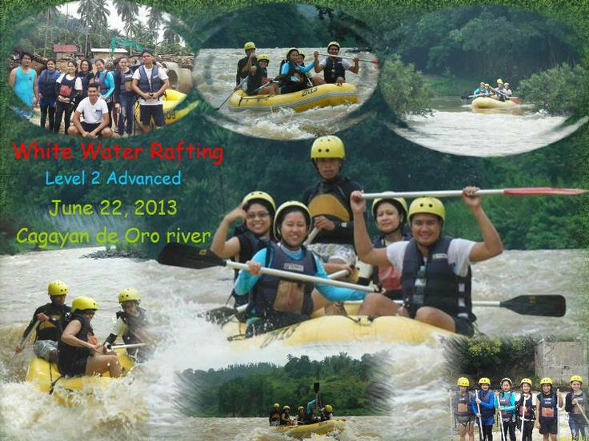
- Divine Mercy Shrine 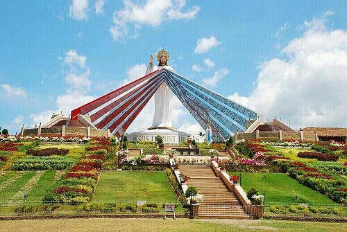
- Macahambus Adventure Park 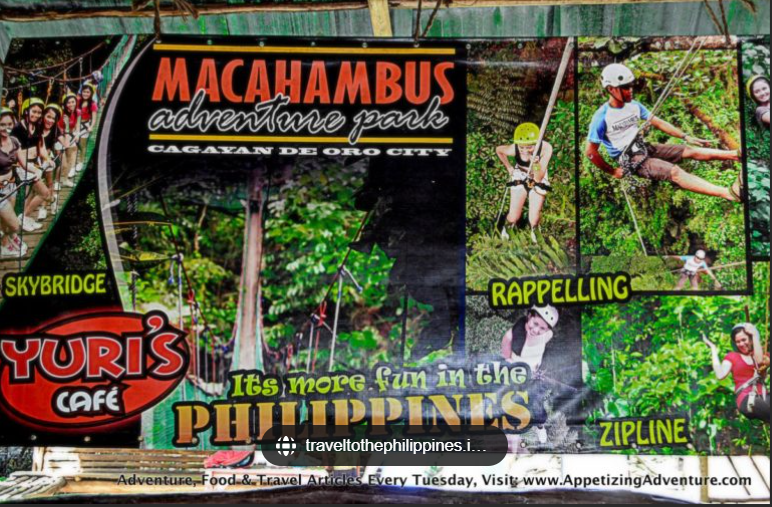
- Gardens of Malasag Eco-Tourism Village 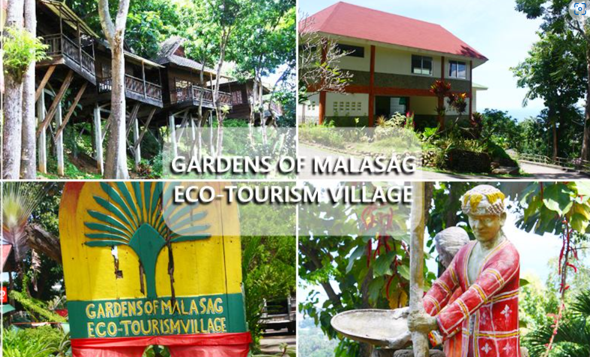
- Museo de Oro 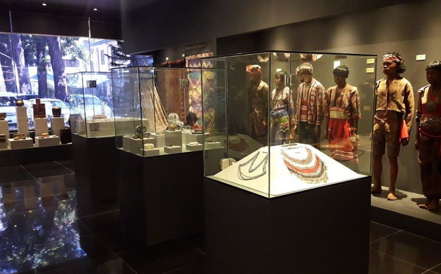
- Seven Seas Waterpark and Resort 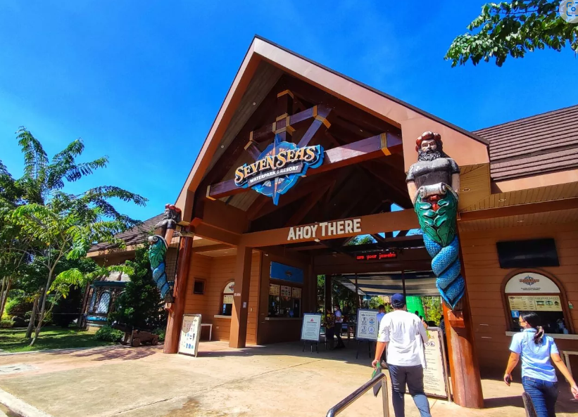
Additionally, the city hosts various festivals and events throughout the year, such as the Kagay-an Festival and Higalaay Festival, showcasing the vibrant culture and traditions of the region.
Schools and Universities
Cagayan de Oro is home to several reputable educational institutions, offering quality education from preschool to higher education levels. Some of the prominent schools and universities include:
- Xavier University - Ateneo de Cagayan 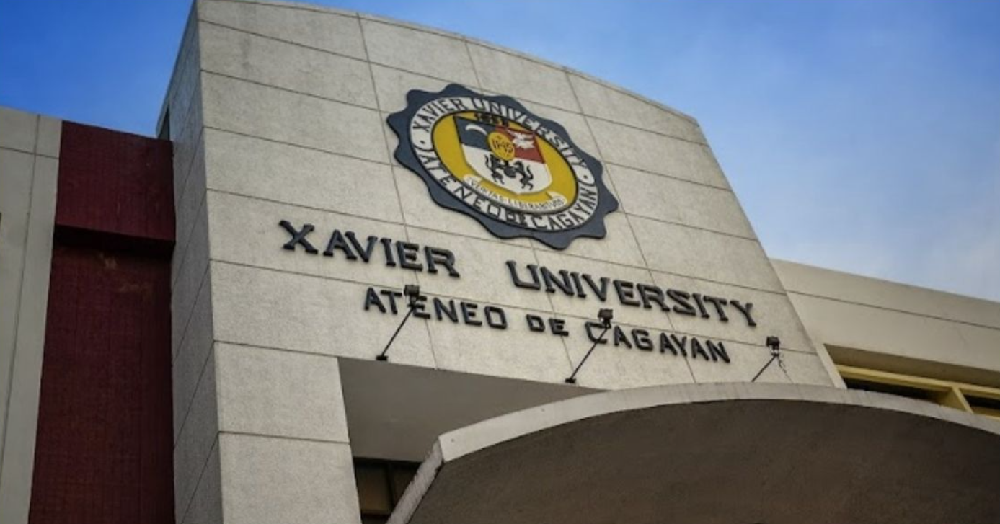
- University of Science and Technology of Southern Philippines 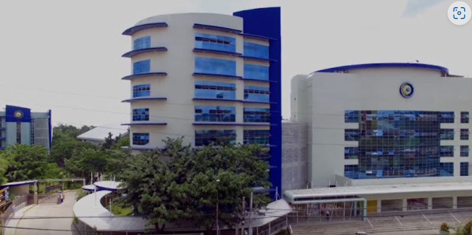
- Liceo de Cagayan University 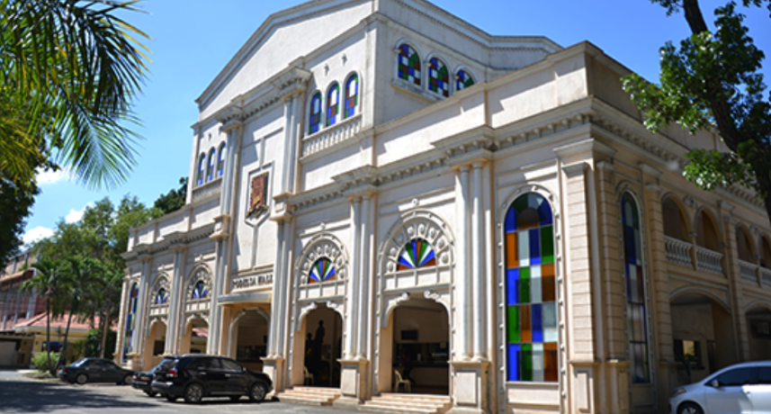
- Cagayan de Oro College - PHINMA Education Network 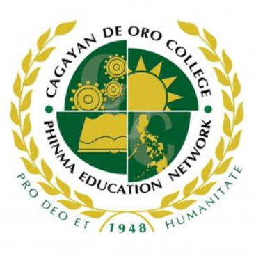
- Capitol University 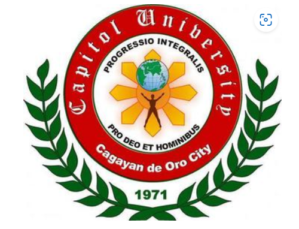
These institutions provide a wide range of academic programs and facilities to cater to the educational needs of students in the region.